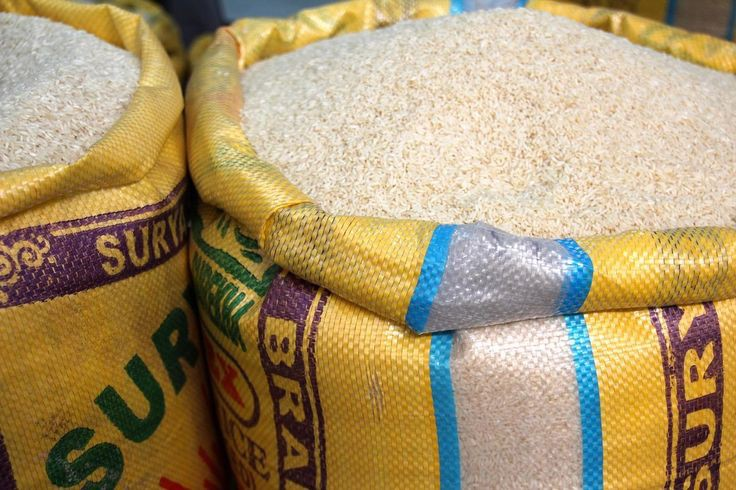

PETROL PRICE HIKE
The cost of petrol in Nigeria is expected to rise due to the financial strain on the Nigerian
National Petroleum Company Limited (NNPCL). The company recently admitted to facing a
$6 billion debt to petrol suppliers, which has hindered its ability to maintain the current fuel
prices. This financial challenge, combined with the fluctuating naira against the dollar, has
made it difficult for the government to sustain the official price of ₦617 per liter. The situation
has led to ongoing petrol shortages across the country, with no immediate relief in sight
HAALAND HAT-TRICK
Erling Haaland scored yet another hat-trick in Manchester City's 3-1 victory over West Ham,
continuing his remarkable form in the Premier League. This hat-trick, his second consecutive
one, helped City maintain their perfect start to the 2024/25 season. Haaland's clinical
finishing and ability to find space in the box have made him one of the most formidable
forwards in the league. His performance further solidifies Manchester City's position at the
top of the table, as they aim to defend their title
LIVERPOOL DOMINANCE
Liverpool demonstrated their dominance with a decisive 3-0 win over Manchester United at
Old Trafford. Mohamed Salah led the charge, scoring a goal and assisting another, while
Luis Díaz also found the back of the net. This victory continues Liverpool's unbeaten run at
the start of the 2024/25 Premier League season, further cementing their status as title
contenders. The team’s strong performance highlights their depth and tactical discipline
under manager Arne Slot, who has guided them to three successive league victories

NLC VS POLICE
The ongoing dispute between the Nigerian Labour Congress (NLC) and the Nigerian Police
has escalated as the police have summoned NLC leaders for questioning. This follows
allegations of criminal intimidation and other offenses. The NLC President, Joe Ajaero, and
General Secretary, Emmanuel Ugboaja, have been called to appear before the police in
Abuja on September 5, 2024. The tension began with a police raid on a bookshop located in
the NLC building in August, leading to increased friction between the labor union and law
enforcement. The NLC has vowed to continue advocating for workers' rights despite these
challenges
INFLATION AND COST OF LIVING
Nigeria is currently grappling with severe inflation and a high cost of living, driven by several
key factors. As of July 2024, inflation stood at 33.40%, a figure that, although slightly lower
than previous months, remains alarmingly high. This inflationary pressure has been largely
exacerbated by the continuous depreciation of the Nigerian naira, which recently traded at
around N1,570 per U.S. dollar. The weakening currency has made imports more expensive,
directly impacting the prices of essential goods and services.The high cost of energy is
another significant contributor. For instance, the production costs for industries such as
cement manufacturing have skyrocketed due to rising energy prices, leading to higher prices
for construction materials. This has further strained the affordability of housing, particularly in
urban areas.Food prices have also soared, making it increasingly difficult for average
Nigerians to meet their basic needs. The situation is particularly challenging for low-income
households, where food insecurity is becoming a growing concern. The economic landscape
is characterized by widespread uncertainty, with both businesses and consumers feeling the
impact of these economic pressures.Efforts by the Central Bank of Nigeria to stabilize the
currency and control inflation have so far been insufficient to curb the rising cost of living,
leaving many Nigerians struggling to cope with the economic realities

REMA HONORED IN EDO STATE
Nigerian musician Rema has recently been celebrated with a major award, recognizing his
significant achievements and impact in the music industry. The award, presented at a
high-profile ceremony, commended Rema for his distinctive sound and global appeal. Known
for hits like "Dumebi" and "Calm Down," Rema has made waves both in Nigeria and
internationally. The accolade not only honors his artistic talent but also underscores his role
in shaping contemporary music trends. Fans and industry insiders have praised Rema’s
dedication and innovation, marking this award as a milestone in his promising career.
PROF.DR.AMB GAFAR TALIAT OLA: THE GREAT PIONEERING JOURNALIST
Prof.Dr.Amb Gafar Taliat Ola is the shining gem behind the great institute:Nigeria Vogue Media Professional Journalism Training Institute. who is also an international advisor to Global Nation Open University. He is well known in both Nigeria and Abroad for his great integrity and contribution to the development of his beloved nation. Moreso, he is appointed as an International Peace Human Right Education Council(IPHREC) official Because of his outstanding performance in promoting National peace. Beacause of his great skill and passion for journalism, Prof.Dr.Amb Gafar Taliat Ola has Established a Carrer development Training institute Named Nigeria Vogue Media to develop young nigerian who have passion for this honourable Journalism Proffesion.
RISING CEMENT PRICES
Nigeria is currently experiencing a sharp rise in cement prices, a development that is adding
pressure to the already high cost of living. This surge in prices is primarily driven by
increasing energy costs, which have significantly raised production expenses for major
cement manufacturers like Dangote, BUA, and Lafarge. During the first half of 2024, these
companies reported a 108.65% increase in production costs, largely due to the high cost of
diesel and gas required to power their plants.This increase in production costs has been
passed on to consumers, leading to cement prices reaching levels that are unaffordable for
many Nigerians. The impact of this is most acutely felt in the construction sector, where the
higher cost of cement is making housing even more expensive, deepening the housing crisis
in the country.For many Nigerians, the rising cost of cement has slowed down construction
projects, particularly in the private sector where individuals build their homes. This situation
is exacerbating the already difficult economic conditions, as the high cost of cement is
contributing to the broader inflationary pressures that are affecting everyday life.The
government and industry stakeholders are under pressure to find solutions to stabilize prices
and make construction materials more affordable, but as of now, the outlook remains
challenging.
VICTOR BONIFACE FINED AND BANNED BY GERMAN FA
Nigerian footballer Victor Boniface has been fined and banned by a German football club
following a recent disciplinary incident. The club, whose identity has not been disclosed,
imposed the penalty after Boniface was found in violation of team rules or regulations. The
specifics of the incident have not been fully detailed, but the fine and ban reflect the club's
commitment to maintaining discipline and standards within the team. Boniface’s response
and the potential impact on his career are being closely watched by fans and sports
analysts, as he navigates the consequences of this disciplinary action.
BOBRISKY ADDRESSES NAIRA ABUSE CASE
In a recent development, Nigerian social media personality Bobrisky has publicly addressed
the ongoing case involving the alleged abuse of the Naira currency. The controversy began
when a video surfaced showing individuals mishandling and desecrating the Naira, Nigeria's
official currency. Bobrisky, known for his influential online presence, took to social media to
express his strong disapproval of the act.
In his statement, Bobrisky emphasized the importance of respecting national symbols and
called for stricter enforcement of laws against currency abuse. He urged Nigerians to uphold
the dignity of their currency and highlighted the need for greater public awareness about the
legal implications of such actions. Bobrisky's intervention has sparked a broader
conversation about cultural respect and legal responsibility in Nigeria.

NAIRA DEPRETIATION
Nigeria is currently grappling with a significant depreciation of the naira, which has fallen
sharply against major global currencies, particularly the U.S. dollar. As of mid-2024, the naira
is trading at approximately N1,570 per dollar, reflecting a substantial loss in value. This
depreciation has been fueled by a combination of factors, including a persistent shortage of
foreign exchange reserves, reduced oil revenues, and the ongoing effects of economic
mismanagement.The impact of the naira's depreciation is being felt across various sectors of
the economy. Import costs have soared, leading to higher prices for goods and services,
which in turn has contributed to the country's high inflation rate, currently above 33%. This
has made everyday necessities more expensive for Nigerians, exacerbating the cost of living
crisis.Businesses that rely on imported raw materials are particularly affected, as they
struggle with increased operational costs. Additionally, the depreciation has made it more
challenging for Nigerian students and businesses to access foreign exchange for education
and international trade, respectively.Efforts by the Central Bank of Nigeria to stabilize the
currency through interventions in the foreign exchange market have had limited success.
The government is under pressure to implement more effective monetary and fiscal policies
to address the root causes of the naira's decline and restore confidence in the economy
BRUNO LABBADIA APPOINTED AS SUPER EAGLE'S COACH
Nigerian football has a new head coach as German tactician Bruno Labbadia has been
appointed to lead the Super Eagles. Labbadia, known for his experience in European
football, takes over the reins from the previous coach amid high expectations from fans and
officials. His appointment marks a significant shift for the team, with hopes that his strategic
acumen and leadership will enhance the Super Eagles' performance in upcoming
international competitions. Labbadia's track record with various clubs in Germany and his
understanding of the game are seen as assets that could bring new energy and direction to
Nigerian football.
DAVIDO'S CHARITY INITIATIVE
Nigerian singer Davido has launched a new charity initiative aimed at addressing critical
social issues in Nigeria. His initiative focuses on improving education, healthcare, and
providing relief to underprivileged communities. Davido’s effort includes partnerships with
various organizations to maximize the impact and reach of the charitable work. The initiative
has already garnered significant attention and support, with contributions from fans and
corporate sponsors. Davido's commitment to philanthropy reflects his ongoing dedication to
using his platform and resources to foster positive change and support those in need across
Nigeria.

NIGERIA'S PARA BADMINTON PLAYER SHINE AT PARIS PARALYMPICS
Nigerian para badminton players have delivered impressive performances at the Paris
Paralympics, bringing home accolades and showcasing their exceptional skills on a global
stage. The athletes have excelled in various categories, earning medals and gaining
recognition for their dedication and talent. Their achievements have not only highlighted their
personal capabilities but also brought attention to the growing support and development of
para sports in Nigeria. The success at the Paralympics is seen as a significant milestone,
inspiring both the athletes and the broader Nigerian community, and setting a high standard
for future competitions.

INFLATIONARY PRESSURE ON FOOD PRICES
Nigeria is currently facing significant inflationary pressure on food prices, making it
increasingly difficult for many citizens to afford basic necessities. As of July 2024, inflation in
the country was at a high 33.40%, largely driven by the depreciation of the naira, which has
weakened against the U.S. dollar, trading at around N1,570 per dollar. This has led to higher
costs for imported goods, including essential food items.The cost of locally produced food
has also surged due to several factors. High energy prices have driven up production and
transportation costs, which are then passed on to consumers. Additionally, recent flooding in
various parts of the country has disrupted agricultural activities, leading to shortages of key
crops and further escalating prices.Staples such as rice, maize, and cooking oil have seen
sharp price increases, putting additional strain on households, particularly those with lower
incomes. This situation has exacerbated food insecurity, with many Nigerians finding it
increasingly difficult to maintain a balanced diet. The high cost of food is contributing
significantly to the overall rise in the cost of living, deepening poverty levels across the
country.The government's efforts to stabilize the economy have had limited success in
curbing food inflation, leaving many Nigerians struggling to meet their daily needs amidst
these challenging economic conditions
ELECTRICITY PRICES
Nigeria is facing rising electricity prices, a trend that has sparked public concern and debate.
The cost of electricity has increased significantly, driven by several factors including higher
costs of energy production, inefficiencies within the power sector, and the ongoing
depreciation of the naira, which has made it more expensive to import essential materials
and equipment for power generation and distribution.Consumers are feeling the impact as
electricity bills have surged, further straining household budgets already under pressure from
high inflation and rising living costs. Businesses, particularly small and medium-sized
enterprises (SMEs), are also struggling with the increased cost of electricity, which is cutting
into their profitability and operational efficiency.Amid these challenges, there is growing
demand for the government to take action to stabilize electricity prices and improve the
reliability of power supply. Some have called for subsidies or regulatory reforms to protect
consumers from further price hikes, while others are urging investment in renewable energy
to diversify the country’s energy mix and reduce dependence on costly fossil fuels.Despite
ongoing discussions, the outlook remains uncertain, with electricity prices likely to continue
rising in the near term unless significant policy interventions are made.

GENEVIEVE NNAJI RETURNS TO NOLLYWOOD
Genevieve nnaji the iconic nigeria actress is making an highly anticipated return to nollywood.
After a brief hiatus from acting, Nnaji has announce her involvement in an upcoming film project.
Her reture has sparked excitement among fans and industry insiders, who have long awaited her comeback.
Nnaji, known for her impactful performances and pioneering role in nollywood's global rise, is expected to bring her signature depth and charisma to this new venture, marking a significant moment in her career and the Nigeria film industry
The buzz surrounding her return is palpable, with industry insiders and fans alike speculating on the potential impact of her latest work. Nnaji, who has always been selective with her roles

FLOODING CRISIS
Nigeria is grappling with a severe flooding crisis, exacerbated by intense rainfall and
overflowing rivers. The floods have impacted various regions, including major cities like
Lagos and Benin City, causing extensive damage to homes, infrastructure, and farmland.
Thousands of people have been displaced, and there are growing concerns about the
spread of waterborne diseases. Emergency response efforts are underway, with government
agencies and humanitarian organizations working to provide relief and support to affected
communities. The crisis underscores the need for improved flood management and
infrastructure to mitigate future risks.
BURNA BOY FACE CRITISISM
Nigerian music star Burna Boy has recently faced criticism over his comments about the
country's news media. During a public statement, he expressed frustration with what he
perceives as biased or misleading reporting in Nigerian news outlets. Critics argue that
Burna Boy's remarks undermine the credibility of journalism and could contribute to public
mistrust in media. Supporters, however, believe he is highlighting important issues about
media integrity and the need for more accurate and responsible reporting. The debate
continues as stakeholders discuss the balance between celebrity influence and media
accountability in Nigeria
WILLIAM TROOST-EKONG MOVED TO SAUDI ARABIA
In a significant development in Nigerian football, William Troost-Ekong has officially signed
with Saudi Arabian club Al-Ittihad. The move marks a new chapter in the 30-year-old
defender's career, as he departs from Serie A side Udinese, where he has been a key
player.
Troost-Ekong, a stalwart of Nigeria's national team and renowned for his defensive prowess,
will now bring his experience to the Saudi Pro League. The transfer, reportedly valued at
around €5 million, highlights the growing trend of established European players moving to
the Middle East for both competitive and financial incentives.
Al-Ittihad, one of Saudi Arabia's top clubs, is looking to strengthen its squad with
Troost-Ekong's addition, aiming for a successful season in both domestic and international
competitions. This move also underscores the increasing appeal of the Saudi league, which
continues to attract high-profile talent. Fans are eagerly awaiting to see how Troost-Ekong
will impact his new team and the league overall.